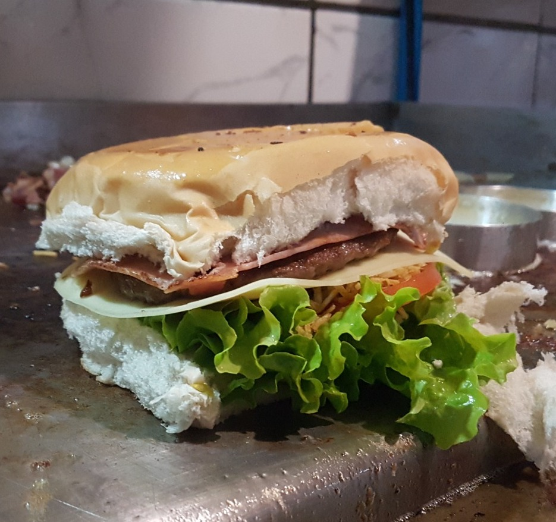
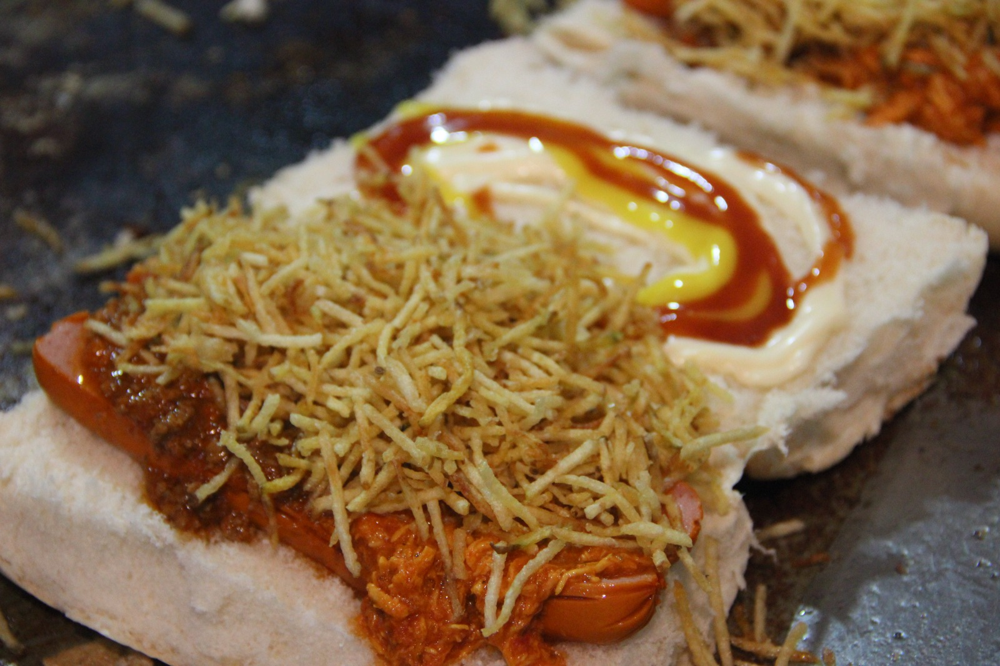
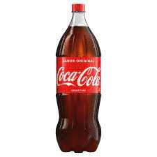
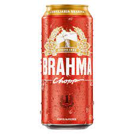
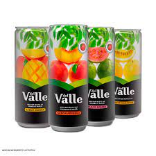

O X-tudo é a opção mais completa para quem deseja um sanduíche recheado e abundante. Como o nome sugere, esse lanche contém "tudo", ou seja, uma combinação generosa de ingredientes. O X-tudo consiste em dois hambúrgueres grelhados, fatias de queijo derretido, presunto, bacon crocante, alface, tomate, cebola, ovo frito, batata palha e molhos variados, como maionese, ketchup e mostarda. Tudo isso é servido entre duas metades de um pão de hambúrguer. O X-tudo é uma opção satisfatória e substancial, ideal para os amantes de sanduíches generosamente recheados.
Esse lanche delicioso é composto por um hambúrguer grelhado ou uma carne bovina temperada, alface crocante, fatias de tomate suculento e queijo derretido, geralmente mussarela. O sanduíche é servido em um pão de hambúrguer macio e pode ser acompanhado de maionese, ketchup e mostarda. O X-salada é uma opção clássica e versátil, agradando aos paladares de muitas pessoas.
O cachorro-quente misto é uma variação saborosa do clássico lanche. Ele consiste em uma salsicha cozida e suculenta, carne moída e frango desfiado bem temperados. Acompanhado por uma combinação de molhos, como ketchup, mostarda e maionese, além de ingredientes opcionais, como batata palha, milho, ervilha, tomate e cebola picada. O cachorro-quente misto oferece uma experiência deliciosa e satisfatória para os amantes de sanduíches quentes.
Desfrute da clássica e icônica Coca-Cola, uma bebida com sabor único. Com sua refrecância, Coca-Cola combina perfeitamente com nossos deliciosos lanches. Sirva-se de uma lata ou garrafa gelada e desfrute do sabor inconfundível dessa bebida adorada em todo o mundo.
Descubra a cerveja Brahma, uma opção clássica para os apreciadores de cervejas de qualidade. Com sua tradição e sabor inconfundível, a Brahma é uma cerveja refrescante e leve, perfeita para acompanhar seus lanches e petiscos favoritos. Ela apresenta uma coloração dourada e espuma cremosa, com um equilíbrio perfeito entre o amargor do lúpulo e a suavidade do malte. Sirva-se de uma garrafa gelada de Brahma e desfrute do prazer de saborear uma cerveja brasileira consagrada. SE BEBER, NÃO DIRIJA!
Para maior conveniência, oferecemos sucos embalados em lata ou garrafa. Esses sucos são produzidos com frutas selecionadas e oferecem uma opção prática para quem está em movimento. Escolha entre diferentes sabores, como suco de maçã, pêssego, uva e outras opções refrescantes.